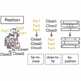
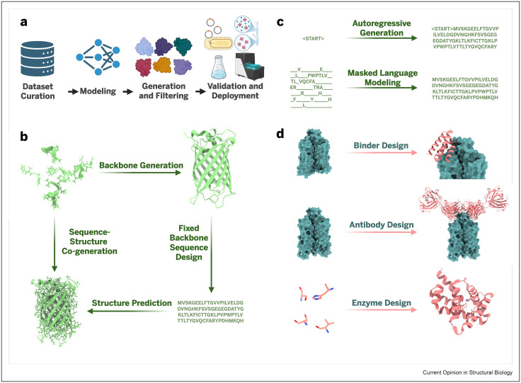
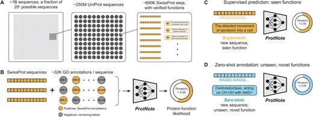

I am a Senior Applied Scientist at Microsoft Research on the BioML team, where I build generative AI models that design new, functional proteins; including EvoDiff, one of the first models to bring discrete diffusion to protein sequence design, followed by the Dayhoff Atlas, which scaled sequence diversity to improve protein generation, and CleaveNet, which applied deep learning to design protease substrates for early cancer detection.
I care about understanding the fundamental forces that drive biological systems, and using that understanding to rationally design efficient, bioinspired technologies faster than we ever could before.
Before Microsoft, I completed my Ph.D. in Chemical Engineering at the University of Washington as an NSF GRFP Fellow, where I developed enhanced sampling methods for molecular dynamics simulations to probe the interfacial phenomena that govern biology at the microscale; from biomolecular self-assembly and protein–surface interactions to biomineralization and enzyme engineering.
My research develops generative machine learning methods for protein design. Specifically, my focus is on models that learn from evolutionary sequence and structure to generate new, functional proteins. This includes diffusion models over protein sequence and structure, protein language models trained at scale, and the benchmarks and annotation tools that connect these models to real-world design tasks.
Selected publications
Building better protein models only matters if we can connect them to biological function. I develop methods to predict, annotate, and benchmark protein function. This work ranges from fitness landscape prediction to multimodal protein function annotation so that protein models stay comparable, reproducible, and grounded in real-world tasks.
Selected publications



During my Ph.D. I developed and applied enhanced sampling methods such as metadynamics and parallel bias metadynamics to probe the interfacial phenomena that govern biological processes at the microscale. This work combined molecular dynamics simulation with experiment to understand biomolecules in various contexts such as peptoid self-assembly, protein behavior at the air-water interface, and biomolecular adsorption to mineral surfaces.
Selected publications